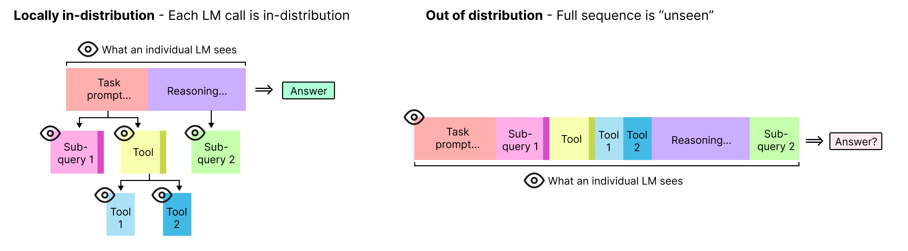
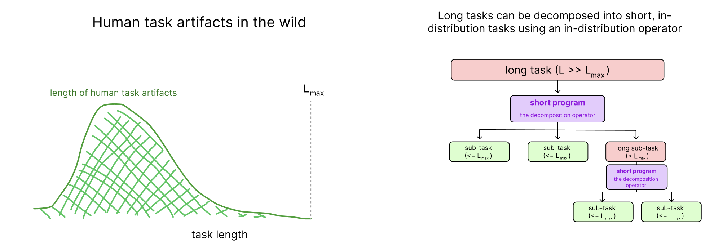
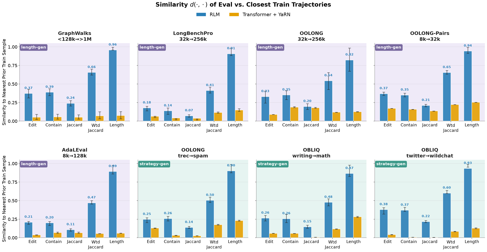

现代大语言模型的后训练正陷入一个「暴力扩展」的怪圈：不断收集更多环境、叠加更长的训练步长。背后的根本原因在于，前沿Transformer在**组合泛化（compositional generalization）**：即通过组合已学技能来解决未见问题的能力：上仍然十分薄弱。
如果模型不能把学到的个体经验组合起来，那么规模的回报将远低于预期：每个新领域都需要投入全新的训练数据。
对此，MIT CSAIL的Alex Zhang和Omar Khattab在最新研究中提出一个关键洞见：**提升组合泛化能力的关键不在于改进神经网络本身，而在于设计更好的harness（框架）**。Harness是外部世界与神经网络之间的程序层，它决定了如何将任意长且复杂的环境状态编码为LLM的输入，并决定下一步动作。通过递归语言模型（Recursive Language Model, RLM）这个具体的harness设计，他们展示了令人印象深刻的泛化能力。
AI领域的开放问题，归根到底往往是如何让深度神经网络实现更好的泛化。当前的后训练策略试图通过基于应用的定向环境来「贴膏药」，但作者认为，**组合泛化：通过组合熟悉的概念和模式来解决未见问题的能力：是现代AI系统必须优先考虑的可规模化的元能力**。
此前提出的「天才错配假说（Mismanaged Geniuses Hypothesis, MGH）」指出，人类关心的任务几乎总能自然地分解为多个子任务，这些子任务不仅远更简单，而且往往没有超出当前语言模型的能力范围。组合泛化正是实践这一假设的关键：它能让系统的可达任务空间超越训练集的直接覆盖范围，尤其是对于那些表面token看起来完全不同但底层结构共享的任务。
然而，过去几年天文数字般的训练投入表明，Transformer及其他神经序列模型在组合泛化上并不可靠。**基本的可微分神经操作远非编码我们所需归纳偏置的最优方式**：特别是当我们现在已经拥有了如此强大的语言先验时，是时候认真思考那些不再停留在几何层面或简单对称性、而是能开始生活在更高抽象层次的归纳偏置了。
我们通常关注的agent系统可以描述为一个循环：某个policy观察环境状态s并执行动作a。最直接的做法是把状态s简单地序列化为prompt丢给Transformer，但状态和动作空间可以任意大、任意复杂，这条路很难走通。
因此我们需要一个 **harness π**：位于外部世界与神经网络之间的程序层，它决定了如何将状态编码为LLM的一个或多个输入，以及如何确定下一步动作。
传统上我们把Claude Code、Codex这类harness视为工具调用的辅助层，但作者认为，**harness更根本的能力在于简化任意复杂的状态**：将庞杂的s分解为多个较小的观察o₁, o₂, ...，使得harness中每个单独的LM调用都能妥善处理。
一个好的harness应该做到：**将不熟悉的问题约简为熟悉的问题，将复杂的问题约简为简单的问题**。即使整体状态s对任何单个LM调用来说都是分布外（OOD），好的harness也能产生「局部内分布（locally in-distribution, LID）」的观察：即每一个LM调用的prompt都在训练数据的覆盖范围内。
相比之下，现有的harness设计（如Claude Code、Codex）未能做到这一点。它们本质上依赖于用任务特定信息、工具调用输出和推理过程不断填充Transformer的上下文窗口。尽管这提供了大量上下文，但这些膨胀的历史很快超出训练分布，表现为实践中常见的「上下文腐烂（context rot）」现象。

作者提出的RLM（递归语言模型）harness围绕两个核心机制设计：**上下文卸载（context offloading）** 和 **编程式子调用（programmatic sub-agent calling）**。这两个机制共同保证了不同问题之间具有相同的root LM视角，从而实现组合泛化。
上下文卸载是指将任务特定的上下文作为符号变量传递，使得root LM调用不会直接看到它：这使得不同的问题在第一步看起来高度相似。需要注意的是，单靠上下文卸载并不能防止环境反馈或子agent信息回流到主上下文，长时间后主上下文仍可能OOD。
编程式子调用则将子agent和普通工具都视为代码REPL中的函数，允许root LM选择性地获取信息并在工具调用和子调用之间传递数据，而root LM自身无需看到这些信息。这包括工具和子调用的输出，它们可以直接存入内存变量，供后续子调用访问。**编程式子调用与上下文卸载同样重要**，两者共同将任务特定信息从主上下文中抽象出去。
众所周知，在特定上下文长度上训练Transformer并不一定能泛化到更长的上下文。生产模型（如Qwen 3.x、Kimi K2.x、GLM 5.x）的大量中训练和后训练工作都致力于精心引入越来越长的训练数据。而对于ReAct、CodeAct等标准agent设计，这一问题尤其严重：它们依赖于不断追加观察到一个不断增长的历史前缀上下文中。
作者假设，对于RLM而言，不同长度的相似任务可以落入同一个等价类。实验中，他们在6种不同的环境上仅用短任务训练Qwen3-30B-A3B-Instruct-2507，然后在8–32倍长的版本上评估。
结果令人信服：**在所有六个任务上，RLM都显著优于基础Transformer**，即使起始eval性能更低。在MRCRv2、GraphWalks、OOLONG等任务上，经过短任务训练的Qwen3 RLM甚至接近或超越了使用前沿模型GPT-5.5的RLM在长任务上的表现。


在上述所有环境中，RLM学会的解决短任务的策略与解决长任务的策略基本等价。由于root LM在上下文卸载后看到的视图几乎完全一样，RLM实质上在训练期间就已经「见过」了同一个任务。**多任务的等价类跨越了长度差异**。
但长度泛化并非总是有保证的。在部分短任务设置中，RLM的一个可行策略是把整个问题卸载给单个子调用，然后直接返回结果：这实质上退化成长上下文Transformer基线。在MRCRv2测试中，RLM最初就没有学到正确的可泛化策略。作者通过加入一个「提示分解」的用户消息变体（即RLM仓库中的补充说明的压缩版本），帮助RLM收敛到了可泛化解。
作者指出，**RLM和一般LID LM系统的训练中，一个重要的研究方向是：需要多少监督/蒸馏才能确保系统收敛到可泛化解**。他们的直觉是在大规模下不需要监督，但为了样本效率，某种形式的监督或提示是有帮助的。
如果说长度泛化涉及的是同一任务在不同尺度上的等价性，那么策略泛化（strategy generalization）则是跨越完全不同的领域：训练一个领域的RLM，能否在另一个具有相同潜在结构的领域上泛化？
作者在3组领域迁移实验中验证了这一想法：（1）OOLONG从TREC聚合问题→垃圾邮件问题；（2）OBLIQ-Bench Analogue从写作→数学；（3）OBLIQ-Bench Descriptive从Twitter立场→Wildchat错误。
结果同样显著：**RLM展现出清晰的跨领域泛化能力，而基础Transformer几乎没有有意义的提升**。有趣的是，基础Transformer的训练奖励通常超过RLM，但在评估性能上却明显落后：RLM的训练奖励与评估奖励高度相关，即使在完全不同的领域上也是如此。这表明Transformer的内部机制难以将任务分解为可组合的模式并泛化。

当然，RLM并非没有代价。在同等规模的任务上，RLM的训练运行时是基础Transformer的1.5–3倍，原因在于每一步需要多个子步骤并等待子调用完成。但这个代价随任务复杂度扩展良好：在更长上下文/更长horizon的任务上直接训练Transformer要昂贵得多。即便是一个简单的ReAct agent，在8×H100上训练30B模型也很困难，原因正是上下文膨胀。
为了理解RLM为什么能泛化，作者分析了eval轨迹与训练轨迹的相似性。他们比较了root LM在eval时看到的prompt与训练期间看到的历史轨迹之间的几种距离度量。结果显示，**RLM的root LM轨迹与训练轨迹的相似度远高于基础Transformer**：这主要来自于上下文卸载的效果。正如附录中展示的，RLM学会了抽象领域特定信息，将可分解的行为隔离到root LM中，同时将领域特定信息委托给子调用。


读到这些令人振奋的结果，很容易让人产生「我们都该去调整harness设计」的想法。但作者提醒，**盲目地给问题强加过于结构化的程序策略（如MapReduce、动态规划）终将碰壁：这将重蹈「苦涩教训」的覆辙**。
他们的论点更为根本：**数据规模化仍将是进步的最大驱动力**，但输入数据的机制及其归纳偏置决定了规模化回报的系数。目前，Transformer及其相关神经架构在组合泛化方面的回报似乎并未改善：这是因为它们狭窄的设计空间（主要是可微分神经算子）缺少了某些根本的东西。
幸运的是，语言作为一种强大的基板，使得AI系统的架构不再局限于简单的可微分算子或低层几何归纳偏置。通过上下文卸载和编程式子agent，RLM架构在泛化能力上远超基础Transformer。其核心思想极其简单但重要：**让系统学会将复杂问题约简为一系列单独且本地内分布的观察序列**。
简而言之，**更好的规模化回报需要组合泛化，而组合泛化的能力必须主要存在于我们今天称之为「harness」的部分**：在未来，这个边界可能与前沿AI系统的基础架构越来越模糊。
参考：https://alexzhang13.github.io/blog/2026/harness/